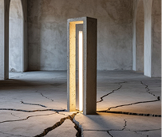

Свет
Передовые решения, улучшающие
качество освещения при минимальном
воздействии на окружающую среду

Жизнь
Бренд с уникальным дизайном, благодаря которому
каждый может создать
непередаваемую
атмосферу
тепла в своем помещении
Мы создаём предметы,
которые говорят.

Привет, мы LUMINAT

Это не просто светильники.
Это форма мысли,
отражённая в свете.
Мы работаем на пересечении дизайна, искусства
и инженерии — чтобы дать
вам
возможность
выразить
себя в пространстве.
КОЛЛЕКЦИИ
СВЕТА

Подвесные светильники
Настенные светильники
Функциональные
и эмоциональные объекты
для жилых и публичных пространств
и эмоциональные объекты
для жилых и публичных пространств

К коллекции→
Напольные светильники
Споты и треки светильники

LUMINAT
КАК
СВЕТ ЖИВЕТ
В ПРОСТРАНСТВЕ
ТИШИНА В БЕТОНЕ
Тип:
Жилое пространство / Лофт
Локация:
Москва
Индустрия:
Частная резиденция
Светильники из коллекций Luminat:
Layer, Edge, Crack
Основные решения:
• Скрытое линейное освещение
• Мягкий нейтральный белый свет
• Работа с фактурой бетона и «визуальной тишиной»
• Мягкий нейтральный белый свет
• Работа с фактурой бетона и «визуальной тишиной»
Описание:
Грубая фактура бетона и гладкий, мягкий свет вступают
в
диалог.
Проект построен на идее визуального приглушения городского
шума.
Свет не
кричит — он успокаивает. Благодаря скрытым источникам и отсутствию
контрастов,
пространство дышит ровно и глубоко, будто задерживает дыхание.
LUMINAT
КАК
СВЕТ ЖИВЕТ
В ПРОСТРАНСТВЕ
ЛУЧИ ПАМЯТИ
Тип:
Арт-галерея / Инсталляция
Локация:
Нижний Новгород
Индустрия:
Культура / выставочное пространство
Светильники из коллекций Luminat:
LThreshold, Orbit, Canvas
Основные решения:
• Направленный жёлтый свет
• Контраст архитектурных плоскостей
• Акцентное освещение точек экспозиции
• Контраст архитектурных плоскостей
• Акцентное освещение точек экспозиции
Описание:
Свет в этом проекте — не просто инструмент, а проводник
между слоями времени.
Пространство оформлено как немой рассказ о важном:
лучи света подчёркивают отдельные фрагменты, словно «высвечивают»
воспоминания.
Каждая зона погружает зрителя в личное переживание тишины и
памяти.
LUMINAT
КАК
СВЕТ ЖИВЕТ
В ПРОСТРАНСТВЕ
ПЛАСТИКА СВЕТА
Тип:
Скульптурная студия
Локация:
Санкт-Петербург
Индустрия:
Креатив / мастерская
Светильники из коллекций Luminat:
Monoform, Pulse, Dome
Основные решения:
• Многослойная система освещения
• Комбинация направленного и рассеянного света
• Работа с тенью как элементом объёма
• Комбинация направленного и рассеянного света
• Работа с тенью как элементом объёма
Описание:
Здесь свет работает не как дополнение, а как
формообразующий элемент.
Каждая тень продумана — она как вторая поверхность
объекта.
Благодаря сочетанию рассеянного и контурного света, пространство
вылеплено заново. Это не просто студия — это световая скульптура, в которой
можно находиться.
LUMINAT
КАК
СВЕТ ЖИВЕТ
В ПРОСТРАНСТВЕ
МЕЖДУ ОКНАМИ И НЕБОМ
Тип:
Частный дом с панорамным остеклением
Локация:
Подмосковье
Индустрия:
Частный жилой интерьер
Светильники из коллекций Luminat:
Line.01, Stem, Whisper
Основные решения:
• Встраиваемое освещение
• Работа на границе дневного и вечернего света
• Подчёркивание пустоты, а не её заполнение
• Работа на границе дневного и вечернего света
• Подчёркивание пустоты, а не её заполнение
Описание:
Грубая фактура бетона и гладкий, мягкий свет вступают
в
диалог.
Проект построен на идее визуального приглушения городского
шума.
Свет не
кричит — он успокаивает. Благодаря скрытым источникам и отсутствию
контрастов,
пространство дышит ровно и глубоко, будто задерживает дыхание.